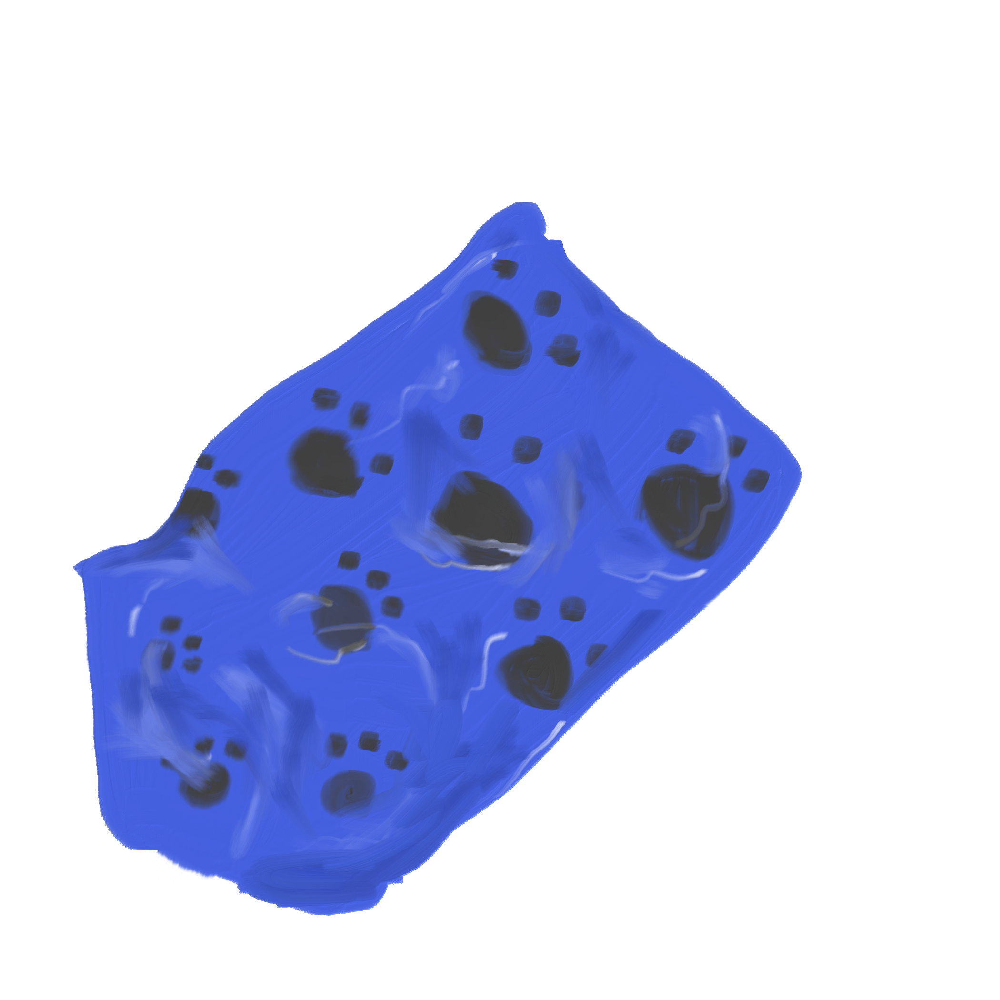

Dog poop not included. I cant tell if its better or worse that it wasn't included. Better, for obvious reasons, but also worse.. because that means someone littered an empty bag for no reason at all. However, I'd like to imagine some lucky dog owner made use of it after forgetting their own bags and having a dog poop emergency. Also, I did like the paw prints on the bag, it made it a little cuter to look at than a plain solid colored bag.
